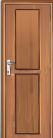

Example
The door is higher than the chair.


Recognizing standard measuring tools of length
Tape measure

Ruler

Recognizing non-standard tools for measuring
length
footsteps

117
117 Example. The door is higher than the chair. The picture shows a wooden chair and a taller wooden door. Recognizing standard measuring tools of length. Tape measure. The picture shows a yellow tape measure with numbered markings. Ruler. The picture shows a ruler marked in centimetres from 1 to 20. Recognizing non-standard tools for measuring length. Footsteps. The picture shows a child walking, with footsteps shown as a way to measure length.